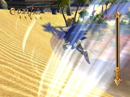
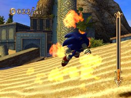
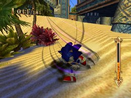

スキル属性の説明
基礎編
各スキルには３種類の属性に分けられています。
青色が風属性で、赤色が炎属性、紫色が闇属性になります。
風属性

ソニックの移動関係をパワーアップさせる属性を表しており、「クイックステップ」や「スピードアップ」といったスキルがあります。
炎属性

ソニックの攻撃をパワーアップさせる属性で、「ファイヤータックル」「ファイヤーゲイズ」などが代表的なスキルです。
闇属性

特殊な効果をもたらす属性で、「リングボーナス」「キャンセルアブソーバー」といった経験値の入手やリングに関する能力が主なスキルとなります。
属性については、効果のカテゴリを表すもので、属性によって特にソニックの能力が変化する事はありませんが、あるスキルの発動条件になりますので、そのスキルを使う際は属性に注意しましょう。
« リザルトの説明 | 基礎編 | サブ系スキルの活用 »
 RSS
RSS